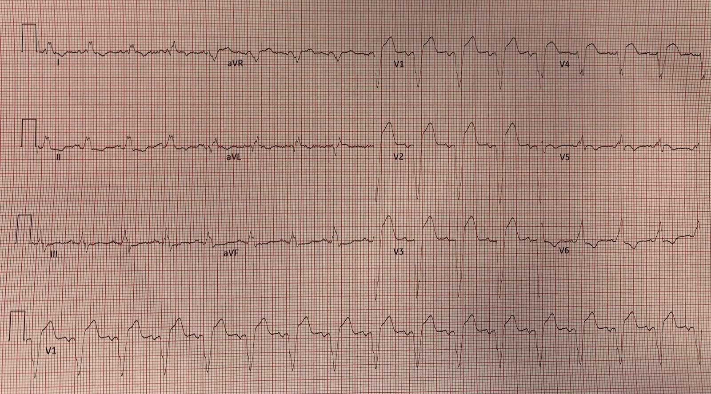
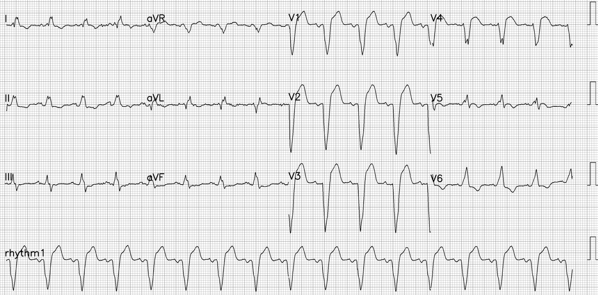
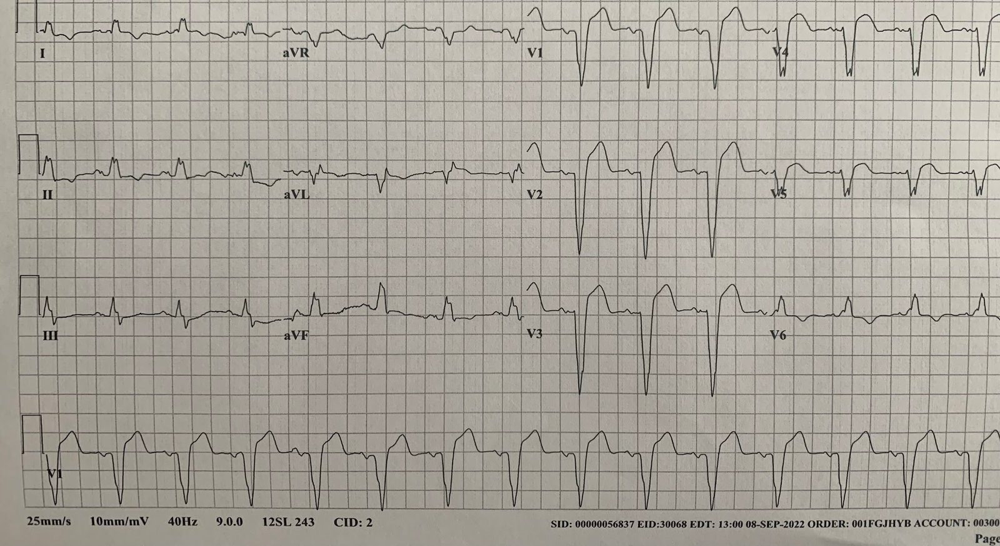
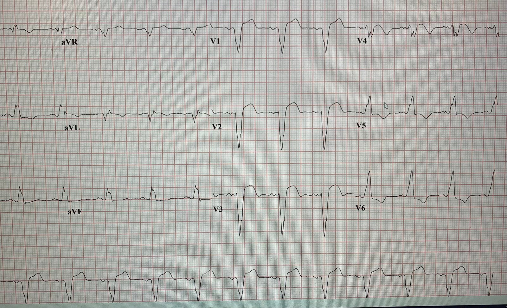
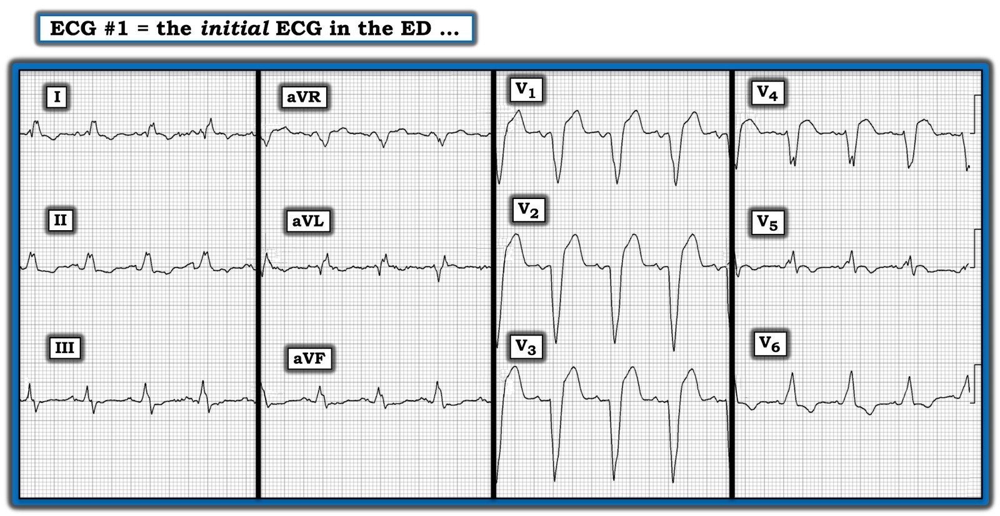

11/09/2022 — Người đàn ông 60 mấy tuổi đau ngực và LBBB
Bản dịch tiếng Việt của bài "A man in his 60s with chest pain and LBBB" – Dr. Smith’s ECG Blog. Giữ nguyên toàn bộ 6 hình ảnh của bản gốc.
Được gửi bởi Ali Khan MD, viết bởi Pendell Meyers
Một người đàn ông 60 mấy tuổi có tăng huyết áp (HTN), rối loạn lipid máu (HLD), đã biết có LBBB từ trước, đến viện vì các cơn đau ngực lan lên vai trái, kèm vã mồ hôi và khó thở. Các cơn bắt đầu từ hôm qua sau khi ông bắt đầu tập thể dục, xuất hiện rồi tự hết nhiều lần trong ngày, và ông quyết định đến khoa cấp cứu (ED) vào sáng hôm sau, khi một trong các cơn này không tự hết như những cơn trước.
Đây là điện tâm đồ của ông lúc phân loại (triage), khi vẫn đang đau (không có điện tâm đồ cũ):




Tôi đã gửi điện tâm đồ này cho các bác sĩ Smith, McLaren và Grauer, và tất cả đều chẩn đoán ngay tắc LAD dựa trên tiêu chuẩn Sgarbossa cải biên (bất kỳ ST chênh lên (STE) đồng hướng nào, bất kỳ ST chênh xuống (STD) đồng hướng nào ở V1-V3 gợi ý OMI thành sau trong LBBB, hoặc bất kỳ STE ngược hướng quá mức nào). Ngoài ra còn có hình dạng đáng lo ngại ở V1-V4 với nhiều khả năng là sóng T tối cấp và đoạn ST-T lồi.
Đây là các số đo tỷ lệ STE/S mà tôi đo được:
V1: 3.0 / 13 mm = 23%
V2: 4.5 / 15 = 30%
V3: 4.5 / 21 = 21%
V4: 3.0 / 9 = 33%
Trong nghiên cứu thẩm định (validation) tiêu chuẩn Sgarbossa cải biên của chúng tôi, chúng tôi chọn ngưỡng 25% cho ngược hướng quá mức để duy trì độ đặc hiệu cao (độ đặc hiệu 99%, độ nhạy 80%). Dùng ngưỡng 20% cho độ nhạy 84% và độ đặc hiệu 94%, nghĩa là vẫn khá đặc hiệu. Khi có nhiều chuyển đạo liên tiếp với tỷ lệ thậm chí chỉ trên 15%, theo kinh nghiệm thực tế thì độ đặc hiệu vẫn khá cao. Ngoài ra, cách này chưa tính đến việc so sánh tỷ lệ với điện tâm đồ nền, điều có thể rất hữu ích.
Quay lại ca bệnh:
“Đã thảo luận ca bệnh với bác sĩ tim mạch can thiệp. Bệnh nhân được cho là thỏa tiêu chuẩn Sgarbossa với LBBB và bệnh sử đáng lo ngại. Được đưa đi thông tim cấp cứu theo diện “báo động STEMI” (code STEMI), đã dùng liều nạp plavix, aspirin, heparin.”
Kết quả thông tim: LAD đoạn gần có tổn thương loét hẹp 90% với dòng chảy TIMI-3. LAD đoạn giữa hẹp 60%. Không có tổn thương tắc nghẽn nào khác. Đặt 1 stent phủ thuốc (DES). EF trên báo cáo thông tim là 25%.
Đây là điện tâm đồ sau thông tim:


Troponin độ nhạy cao ban đầu là 6457 ng/L (không lấy thêm mẫu troponin nào). Tình cờ phát hiện covid (+) mà không có triệu chứng hô hấp hay nhiễm trùng nào.
Điện tâm đồ ngày hôm sau:


Tôi nhắn tin điện tâm đồ này cho bác sĩ Smith và ông nhắn lại:
“Tái tưới máu không hoàn toàn, hoặc có nhiều khối kết tập tiểu cầu-fibrin ở hạ lưu. Tiên lượng xấu.”
Khi điện tâm đồ có mức hồi phục đoạn ST dưới 70%, và đặc biệt là dưới 50%, thì tái tưới máu là không đầy đủ. Nếu động mạch đã thông, thì việc không có tái tưới máu là do tắc nghẽn các mạch máu nhỏ ở hạ lưu.
Trong LBBB, khi không có điện tâm đồ nền, rất khó biết có đạt mức hồi phục ST 70% hay không. Điện tâm đồ ban đầu có STE 4.5 mm ở V3. Mức bình thường trong LBBB là 10% biên độ sóng S đi trước (nghiên cứu của Smith), nên có lẽ mức nền là 2 mm. Điện tâm đồ sau tái tưới máu có STE 3 mm, vậy mức hồi phục ST theo tỷ lệ là 1.5/2.5 (60%). Như vậy đã đủ chưa? Có lẽ là chưa.
Như bạn thấy, nhận định điện tâm đồ của bác sĩ Smith (không có bất kỳ thông tin nào khác) là tái tưới máu vi mạch kém. Hiện tượng này còn được gọi là “không tái lưu” (“No Reflow”).
Đọc về hiện tượng không tái lưu (No Reflow) tại đây:
A 60 year old man with chest pain — many fascinating aspects to this ECG (Một người đàn ông 60 tuổi đau ngực — nhiều khía cạnh hấp dẫn trên điện tâm đồ này)
Đúng như dự đoán dựa trên hình ảnh không tái lưu trên điện tâm đồ, siêu âm tim vào ngày 2 cho thấy:
Chức năng tâm thu thất trái giảm nặng. Giảm động toàn bộ thất trái mức độ nặng. EF 18%. Chức năng thất phải bình thường.
Không có thêm thông tin theo dõi.
Những điểm cần học:
Dùng tiêu chuẩn Sgarbossa cải biên để chẩn đoán OMI trong LBBB, nhịp tạo nhịp thất, và nói chung mọi hình dạng phức bộ QRS rộng đáng kể khác.
Ngưỡng 25% cho ngược hướng quá mức được chọn với ưu tiên là độ đặc hiệu. Ngưỡng 20% vẫn có độ đặc hiệu 94%, và chúng tôi cho rằng các tình huống khác cũng đặc hiệu (chẳng hạn nhiều chuyển đạo liên tiếp có tỷ lệ trên 15%, hoặc tỷ lệ tăng so với điện tâm đồ nền đã biết).
Cần hiểu rằng điện tâm đồ là chỉ dấu tái tưới máu tốt hơn chụp mạch vành, trừ khi có đánh giá mức tưới máu cơ tim (myocardial perfusion grade), được phân độ theo mức “ngấm thuốc cơ tim” (“blush”).
Relationship of TIMI Myocardial Perfusion Grade to Mortality After Administration of Thrombolytic Drugs (Mối liên quan giữa mức tưới máu cơ tim TIMI với tử vong sau khi dùng thuốc tiêu sợi huyết)
Time-to-treatment significantly affects the extent of ST-segment resolution and myocardial blush in patients with acute myocardial infarction treated by primary angioplasty (Thời gian đến khi điều trị ảnh hưởng đáng kể đến mức độ hồi phục đoạn ST và mức ngấm thuốc cơ tim ở bệnh nhân nhồi máu cơ tim cấp được điều trị bằng nong bóng tiên phát)
OMI không phải là một chẩn đoán điện tâm đồ, nhưng điện tâm đồ thường có thể đưa ra chẩn đoán.
==================================
Bình luận của KEN GRAUER, MD (11/9/2022):
==================================
Bài tổng quan xuất sắc của bác sĩ Meyers về những điểm tinh tế khi đánh giá các bản ghi LBBB để ước lượng khả năng có OMI cấp. Như bác sĩ Meyers đã nêu — Tiêu chuẩn Sgarbossa cải biên theo Smith cho nhồi máu cơ tim cấp đã được thỏa mãn không chỉ ở một, mà ở nhiều chuyển đạo! Nhờ vậy — quyết định đúng đã được đưa ra, và bệnh nhân được đưa đi thông tim kịp thời.
- Điểm sâu sắc bổ sung từ ca hôm nay của bác sĩ Meyers — là việc sử dụng khéo léo các điện tâm đồ liên tiếp đôi khi có thể là chỉ dấu tốt hơn cho thấy thành công của tái tưới máu (hoặc sự thiếu vắng nó) so với thông tim!
- BẤM VÀO ĐÂY — Để xem bài tổng quan của Smith và cs. (có minh họa cách đo đạc để đánh giá tiêu chuẩn Sgarbossa cải biên theo Smith).
- Trong số rất nhiều ca bệnh nhân đau ngực có LBBB mà chúng tôi đã đăng trên Dr. Smith’s ECG Blog — bài đăng ngày 31 tháng Ba năm 2022 của bác sĩ McLaren đặc biệt sâu sắc khi minh họa cách sử dụng Tiêu chuẩn Sgarbossa cải biên theo Smith có thể giúp nhanh chóng loại trừ OMI cấp mặc dù có LBBB. (Bình luận của tôi ở cuối trang của bài đăng ngày 31/3/2022 này sau đó minh họa cách tôi sử dụng tiêu chuẩn định tính để hỗ trợ nhận diện OMI cấp khi có LBBB).
Tôi giới hạn bình luận về ca hôm nay ở việc đề cập ngắn gọn một số đặc điểm định tính có trên bản ghi ban đầu của ca hôm nay — mà để cho rõ, tôi đã tái hiện lại trong Hình 1.
- XIN NHẤN MẠNH: Các đặc điểm điện tâm đồ mà tôi mô tả dưới đây không cần thiết để chẩn đoán OMI cấp trên bản ghi ban đầu của ca hôm nay — vì như bác sĩ Meyers đã bàn chi tiết ở trên, phát hiện nhiều chuyển đạo liên tiếp có tỷ lệ STE/S tăng rõ rệt ở một bệnh nhân có đau ngực mới xuất hiện là hoàn toàn có giá trị chẩn đoán. Dù vậy — tôi thấy luôn hữu ích khi đưa việc đánh giá cả 12 chuyển đạo vào quá trình ra quyết định — với thực tế đáng yên tâm là càng nhiều chuyển đạo cho thấy thay đổi sóng ST-T cấp (hoặc có khả năng cấp) — thì chẩn đoán của bạn càng vững chắc!
- Vậy tôi muốn nói gì khi nhắc đến các đặc điểm “định tính” bất thường? Tôi tìm các thay đổi sóng ST-T mà tôi biết là không bình thường ở bệnh nhân có LBBB. Một số đặc điểm trong số này đặc hiệu hơn những đặc điểm khác — nhưng gộp lại, bạn càng thấy nhiều bất thường (bên cạnh việc đánh giá khách quan tỷ lệ STE/S tăng) — thì tôi càng thấy các nhận định của mình chính xác hơn.


ĐÁNH GIÁ Định tính CỦA TÔI về điện tâm đồ ở Hình 1:
Trên Hình 1 — tôi đếm được 11/12 chuyển đạo có bất thường sóng ST-T có khả năng là cấp tính. Bao gồm:
- 4 chuyển đạo trước tim mà bác sĩ Meyers đã nêu, có số đo STE/S bất thường rõ ràng ( = các chuyển đạo V1, V2, V3 và V4).
- Trong các chuyển đạo này — tôi cho rằng hình dạng của đoạn ST lớn không tương xứng, dạng vòm và chênh lên ở chuyển đạo V4 chắc chắn không phù hợp với LBBB “đơn thuần”.
- Trong bối cảnh này — chuyển đạo V5 (dù biên độ phức bộ QRS nhỏ) kế bên — cho thấy đoạn ST dạng vòm bất thường rõ kèm sóng T đảo ngược không ngờ tới. Điều này cũng không phù hợp với LBBB “đơn thuần”.
- Chuyển đạo V6 tinh tế hơn nhiều — nhưng trong bối cảnh các chuyển đạo V4 và V5 kế bên — hình dạng vòm của đoạn ST chênh xuống ở chuyển đạo này có khả năng là sự tiếp nối của hình dạng vòm thấy ở các chuyển đạo trước đó. (Xin nhấn mạnh — nếu chỉ xét riêng, tôi sẽ không diễn giải sóng ST-T ở chuyển đạo V6 là bất thường!).
Ngoại trừ chuyển đạo aVR — tôi cho rằng 5 chuyển đạo chi còn lại đều biểu hiện thay đổi sóng ST-T bất thường (và có khả năng cấp tính):
- Các chuyển đạo I và aVL bên cao đều biểu hiện sóng Q (đây không phải là dấu hiệu bình thường trong LBBB) — cộng với gợi ý đoạn ST dạng vòm, nếu không chênh lên — thì ít nhất cũng đẳng điện (trong khi bình thường sóng ST-T phải chênh xuống ít nhất là nhẹ ở các chuyển đạo bên này khi có LBBB “đơn thuần”).
- Mỗi chuyển đạo thành dưới (II, III, aVF) — đều có ST dẹt bất thường kèm ST chênh xuống nhẹ. Hình ảnh này không thường gặp trong LBBB “đơn thuần”.
- XIN NHẤN MẠNH: Nếu chỉ xét riêng — không thay đổi sóng ST-T nào ở các chuyển đạo chi này có giá trị chẩn đoán. Thay vào đó — chúng là các dấu hiệu không đặc hiệu, có thể liên quan đến thiếu máu cục bộ, hoặc có thể đã có từ lâu mà không mang tính cấp tính. NHƯNG — khi đi kèm tỷ lệ STE/S bất thường rõ ở 4 chuyển đạo trước tim — và các dấu hiệu sóng ST-T bất thường chắc chắn về mặt hình thái ở các chuyển đạo V4,V5 — tôi cho rằng rất có khả năng mỗi chuyển đạo trong 11 chuyển đạo tôi nêu ở trên đều đang thể hiện phiên bản thay đổi cấp tính của riêng nó.